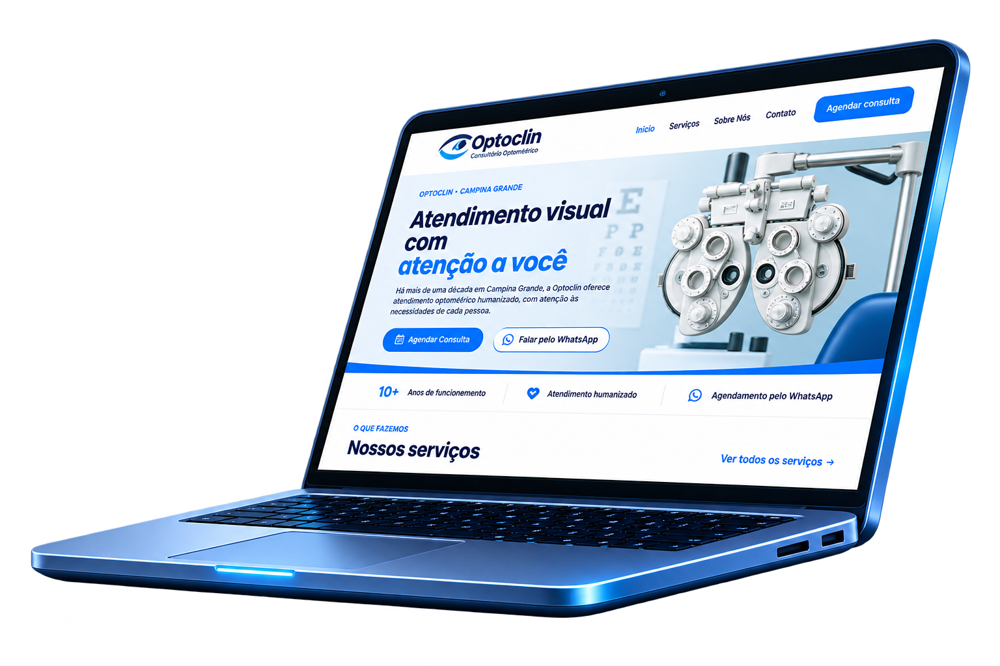
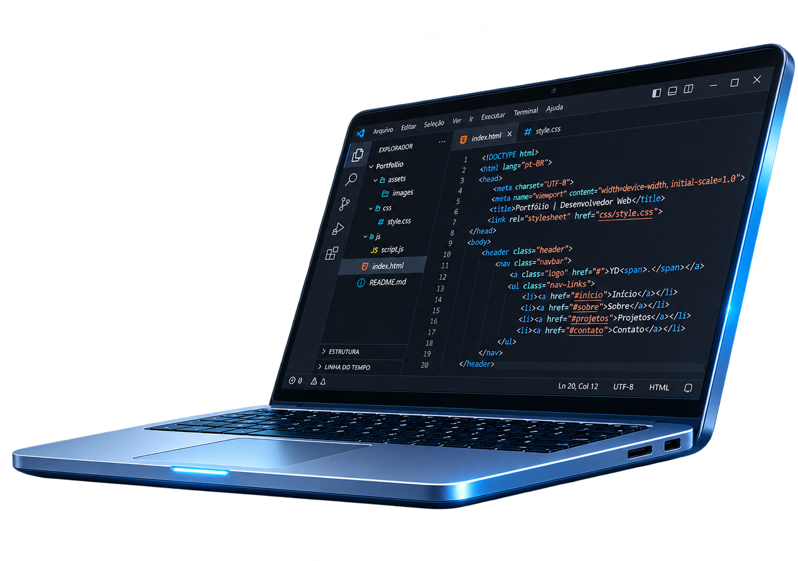
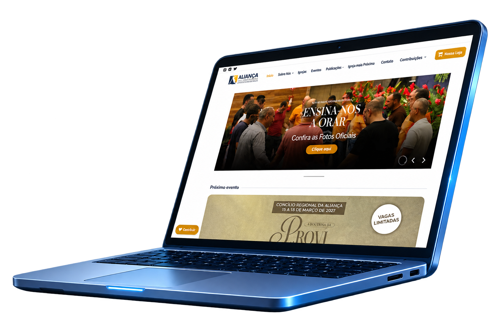

Optoclin
Site institucional de consultório optométrico, com navegação intuitiva, apresentação de serviços e foco em acessibilidade.
Acessar siteCriação de sites institucionais modernos, responsivos e focados em experiência, performance e resultados.

Sou Yago Dantas, desenvolvedor web com experiência na criação de sites institucionais e soluções digitais personalizadas.
Busco unir design, tecnologia e boas práticas de desenvolvimento para criar interfaces modernas, intuitivas e responsivas.
Cada projeto é uma oportunidade de transformar necessidades reais em soluções digitais funcionais, acessíveis e visualmente consistentes.
Conheça meus projetosFerramentas utilizadas no desenvolvimento e na personalização de projetos web.
Conheça os sites em que trabalhei, com foco em identidade visual, usabilidade e objetivos institucionais.

Site institucional de consultório optométrico, com navegação intuitiva, apresentação de serviços e foco em acessibilidade.
Acessar site
Site institucional com organização de conteúdos, identidade visual personalizada e navegação responsiva.
Acessar siteVamos transformar sua ideia em um site profissional, moderno e eficiente.